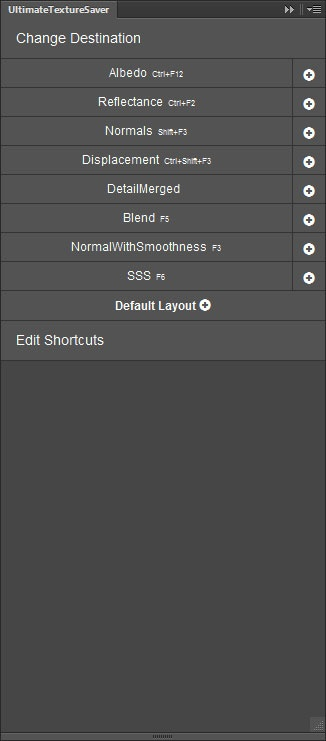
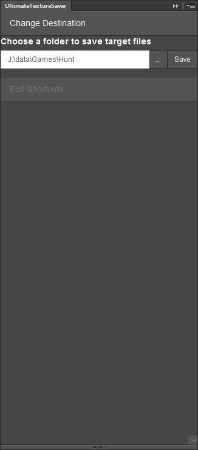
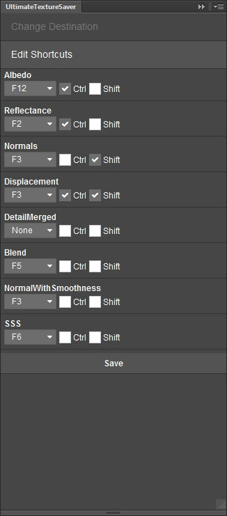

Обзор
Разделы
UltimateTextureSaver — это расширение Photoshop, разработанное для облегчения жизни художника по текстурам.
- Он создает макет папки по умолчанию в файлах PSD для нужных текстур.
- Сохраняет нужные текстуры и автоматически перемешивает все каналы.
- Поддерживает определяемые пользователем сочетания клавиш.
- Поддерживаемые текстуры и отображение каналов легко и быстро настраиваются.
В настоящее время он протестирован только на Photoshop CS6, но поддерживает Photoshop CS5.5 и CC. Примечание. Эта поддержка не распространяется на версии Photoshop 2014 г., CC и более поздние (включая использование диспетчера расширений CC в указанных выше версиях).
Установка
Его можно установить вручную с помощью UltimateTextureSaver.zip файл. Затем следует открыть Adobe Extension Manager и использовать его для установки расширения. После этого следует скопировать содержимое папки "{zip}UltimateTextureSaver\Установить" в "C:\Program Files\Adobe\"
Примечание: Эта установка работает только для пользователей, у которых есть права администратора к своим машинам!
- Перезапустите Photoshop после установки.
- В Photoshop вы можете найти расширение в меню "Окно/Расширения/UltimateTextureSaver".
Использование
Вид по умолчанию | Изменить вкладку «Место назначения» | Вкладка «Редактировать ярлыки» |
|---|---|---|
 |  |  |
Создать макет текстуры
Чтобы создать макет текстуры, нажмите кнопку "+" кнопка рядом с названием текстуры.
Если ты нажмешь «Макет по умолчанию +» , тогда будут созданы макеты для Albedo, NormalWithSmoothness и Reflectance.
Сохранение текстур
Чтобы сохранить желаемую текстуру, нажмите соответствующую кнопку или нажмите соответствующее сочетание клавиш.
Если целевая текстура не существует, появляется диалоговое окно RC, и пользователь может изменить настройки текстуры. Однако если целевая текстура уже существует, диалоговое окно RC пропускается, чтобы ускорить процесс сохранения. Если пользователь хочет снова отобразить диалоговое окно RC, то кнопку сохранения текстуры необходимо нажать с помощью Средняя кнопка мыши.
Изменение пункта назначения
Текстура по умолчанию сохраняется. Две папки вверх от места, где находится PSD.
Это зависит от конфигурации и может быть изменено для каждого проекта, если есть необходимость в различных структурах папок.
Чтобы изменить пункт назначения, нажмите кнопку «Изменить пункт назначения"Кнопка. После этого вам будет разрешено выбрать новое целевое местоположение для файлов *.tif. Не забудьте нажать "Сохранить", чтобы сохранить изменения.
Целевое местоположение всегда относительно местоположения PSD, поэтому, когда другой исполнитель откроет PSD в другом месте, файл *.tiff будет сохранен относительно этого.
Редактировать ярлыки
Единственный способ поддержать сочетания клавиш в расширениях Photoshop — создать действия Photoshop. Из-за ограничений Photoshop вам всегда придется перезапускать Photoshop, если вы хотите редактировать ярлыки UltimateTextureSaver — это включает в себя тот же сеанс, в котором вы уже изменили некоторые ярлыки для других действий Photoshop.
Редактор сочетаний клавиш учитывает все сочетания клавиш в Photoshop. Поэтому если вы сталкиваетесь с ситуацией, когда невозможно настроить ярлык так, как вы хотите, то почти всегда это происходит потому, что он уже используется в другом действии Photoshop.
Всегда помните «Сохранить» любые изменения. Фактически сохраненные ярлыки отображаются рядом с названием кнопки текстуры.
Сочетания клавиш будут работать даже без активного/видимого расширения.
Техническая документация
Кнопки текстур настраиваются с помощью XML-файла. "{zip}\UltimateTextureSaver\UltimateTextureSaver.xml" и являются динамичными.
UltimateTextureSaver.xml
<UltimateTextureSaver path="..\.."> <Texture name="Albedo" suffix="_diff" FKey="F2" Shift="false" Ctrl="false" Default="true" > <Components> <Component name="diff" target="color" alias="DIFF" color="red"/> <Component name="alpha" target="a" alias="ALPHA" color="gray"/> </Components> </Texture> <Texture name="Reflectance" suffix="_spec" FKey="F2" Shift="false" Ctrl="true" Default="true"> <Components> <Component name="spec" target="color" alias="SPEC" color="yellow"/> </Components> </Texture> <Texture name="Normals" suffix="_ddn" FKey="F3" Shift="true" Ctrl="false"> <Components> <Component name="normal" target="color" alias="DDN" color="blue"/> </Components> </Texture> <Texture name="Displacement" suffix="_displ" FKey="F3" Shift="true" Ctrl="true"> <Components> <Component name="displ" target="a" alias="HEIGHT" color="orange"/> </Components> </Texture> <Texture name="DetailMerged" suffix="_dt" FKey="F4" Shift="false" Ctrl="true"> <Components> <Component name="detail_diff" target="r"/> <Component name="detail_gloss" target="b"/> <Component name="detail_normal" target="ga" mapping="rg" /> </Components> </Texture> <Texture name="Blend" suffix="_mask" FKey="F5" Shift="false" Ctrl="false"> <Components> <Component name="blend" target="color"/> </Components> </Texture> <Texture name="NormalWithSmoothness" suffix="_ddna" FKey="F3" Shift="false" Ctrl="false" Default="true"> <Components> <Component name="normal" target="color" alias="DDN" color="blue"/> <Component name="gloss" target="a" alias="GLOSS" color="violet"/> </Components> </Texture> <Texture name="SSS" suffix="_sss" FKey="F6" Shift="false" Ctrl="false"> <Components> <Component name="sss_translucency" target="r"/> </Components> </Texture></UltimateTextureSaver> |
Узел | Атрибут | Объяснение |
|---|---|---|
| <UltimateTextureSaver> | Корневой XML-узел. | |
| путь | Относительный путь по умолчанию, где текстуры сохраняются в Photoshop. | |
| <Текстура> | Главный узел, определяющий известную текстуру для системы. | |
| имя | Название кнопки в расширении UltimateTextureSaver. | |
| суффикс | Суффикс целевого файла *.tif. | |
| FКлюч | Fkey по умолчанию для редактора ярлыков. Может быть переопределено и должно быть в верхнем регистре. | |
| Сдвиг | Ложь/правда. Определяет, использует ли ярлык также клавишу Shift. | |
| Ctrl | Ложь/правда. Определяет, использует ли ярлык также клавишу Ctrl. | |
| По умолчанию | Если установлено значение true, компоненты текстуры создаются при нажатии кнопки «Макет по умолчанию» в UltimateTextureSaver. | |
| <Компоненты> | Список компонентов, из которых может состоять текстура. | |
| <Компонент> | Определение конкретного компонента. | |
| имя | Имя набора слоев, который будет создан и использован для сохранения. | |
| цель | Определяет целевые каналы, на которых будет размещаться контент определенного компонента. Значения: цвет/r/g/b/a. Цвет должен быть отдельным, тогда как RGB может использоваться в комбинации. цель="rg" означает, что каналы r и g из набора исходных слоев будут помещены в соответствующие каналы результирующей текстуры. | |
| картографирование | Если требуется перетасовка каналов, это определяет отображение каналов. Определение цель="ga" сопоставление="rg" означает, что канал r из исходного набора слоев будет скопирован в g-канал целевой текстуры и g-канал для альфа. | |
| псевдоним | Альтернативные имена наборов слоев, разделенные точкой с запятой — для сохранения обратной совместимости. | |
| цвет | Цвет слоя текстуры, заданный при создании с помощью расширения UltimateTextureSaver. Возможные значения: красный, оранжевый, желтый, синий, фиолетовый, серый, нет. |